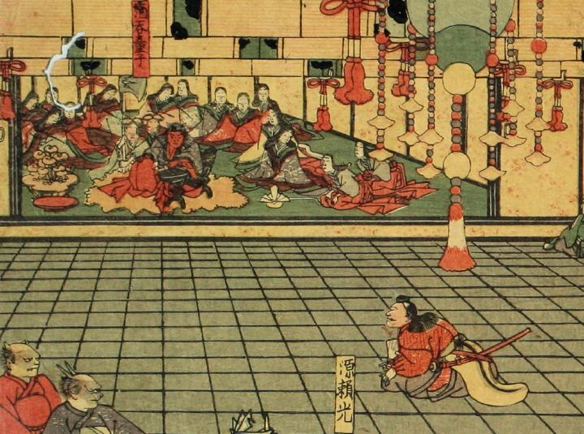

源頼光の拝謁を受ける酒呑童子。2本の角をもち、体は赤く、黒い髪をたらしている。灰色の着物と赤い袴を身につけ、毛皮のようなものの上に右ひざをたてて座っている。多くの女官たちを後ろにひかえさせている。
著作者：一栄斎芳艶（歌川芳艶）／出典：親書誌：U426_nichibunken_0086：丹波國大江山之圖；タンバノクニオオエヤマノズ／日付：2007／資源識別子：U426_nichibunken_0086_0016_0000
Copyright (c)2010- International Research Center for Japanese Studies, Kyoto, Japan. All rights reserved.